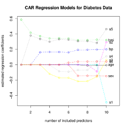
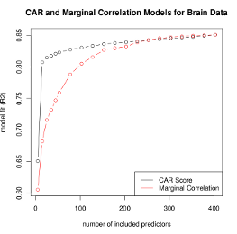
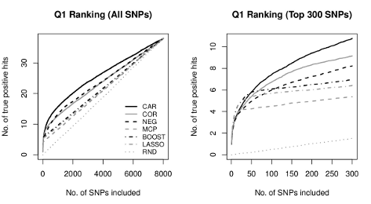

High-Dimensional Regression and CAR Score Variable Selection

care page on CRAN.
The "care" package implements the regression approach of Zuber and Strimmer (2011). CAR scores measure the correlation between the response and the Mahalanobis-decorrelated predictors. The squared CAR score is a natural measure of variable importance and provides a canonical ordering of variables. This package provides functions for estimating CAR scores, for variable selection using CAR scores, and for estimating corresponding regression coefficients. Both shrinkage as well as empirical estimators are available.
Current Version: 1.1.9
Authors: Verena Zuber and Korbinian Strimmer.
Documentation and Installation:
enter at the R console: install.packages("care")
- Manual (pdf file) and release history.
- Download of care version 1.1.9 source package.
- Archive of previous versions of care.
- Licensed under the GNU GPL version 3 (or any later version).
Methodology Paper with R Code:
- V. Zuber and K. Strimmer. 2011. High-dimensional regression and variable selection using CAR scores. Statist. Appl. Genet. Mol. Biol. 10: 34. (arXiv:1007.5516)
- R code for reproducing the simulations described in the 2011 methodology paper.
-
CAR regression models on diabetes data (click on image to enlarge) - see also the R notebook for analysis of diabetes data and the corresponding PDF vignette:
. - Comparison of regression models based CAR scores and marginal correlations for brain data (click on image to enlarge) - see also the R notebook for analysis of the brain data and the corresponding PDF vignette:
.
{kind=link}
{kind=link}
GAW17 Case Study: Simultaneous SNP Selection with CAR Scores
- V. Zuber, A. P. Duarte Silva, and K. Strimmer. 2012. A novel algorithm for simultaneous SNP selection in high-dimensional genome-wide association studies. BMC Bioinformatics 13: 284. (arXiv:1203.3082)
- Comparison of SNP rankings for phenotype Q1 (click on image to enlarge):
. - R code for the analysis of the GAW17 data.
{kind=link}
Back to software page.